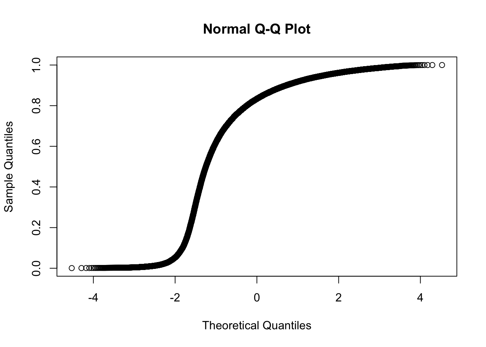

Methyl_reg_lima_ASH
Lauren Blake
December 5, 2017
Originally, I wrote this script to determine differentially methylated regions, DMRs, using a voom+limma framework. Through this analysis, we found that due to the distribution of the methylated regions, we should not use limma.
# Load libraries
library("gplots")Warning: package 'gplots' was built under R version 3.2.4
Attaching package: 'gplots'The following object is masked from 'package:stats':
lowesslibrary("ggplot2")Warning: package 'ggplot2' was built under R version 3.2.5library("RColorBrewer")
library("scales")Warning: package 'scales' was built under R version 3.2.5library("edgeR")Warning: package 'edgeR' was built under R version 3.2.4Loading required package: limmaWarning: package 'limma' was built under R version 3.2.4library("R.utils")Warning: package 'R.utils' was built under R version 3.2.5Loading required package: R.ooWarning: package 'R.oo' was built under R version 3.2.5Loading required package: R.methodsS3Warning: package 'R.methodsS3' was built under R version 3.2.3R.methodsS3 v1.7.1 (2016-02-15) successfully loaded. See ?R.methodsS3 for help.R.oo v1.21.0 (2016-10-30) successfully loaded. See ?R.oo for help.
Attaching package: 'R.oo'The following objects are masked from 'package:methods':
getClasses, getMethodsThe following objects are masked from 'package:base':
attach, detach, gc, load, saveR.utils v2.5.0 (2016-11-07) successfully loaded. See ?R.utils for help.
Attaching package: 'R.utils'The following object is masked from 'package:utils':
timestampThe following objects are masked from 'package:base':
cat, commandArgs, getOption, inherits, isOpen, parse, warningslibrary("plyr")Warning: package 'plyr' was built under R version 3.2.5library("limma")
library("gridExtra")Warning: package 'gridExtra' was built under R version 3.2.4library("VennDiagram")Warning: package 'VennDiagram' was built under R version 3.2.5Loading required package: gridLoading required package: futile.loggerWarning: package 'futile.logger' was built under R version 3.2.5source("functions.R")
library(ashr)
library(ggplot2)
library(dendextend)Warning: package 'dendextend' was built under R version 3.2.5Warning: replacing previous import by 'magrittr::%>%' when loading
'dendextend'
---------------------
Welcome to dendextend version 1.5.2
Type citation('dendextend') for how to cite the package.
Type browseVignettes(package = 'dendextend') for the package vignette.
The github page is: https://github.com/talgalili/dendextend/
Suggestions and bug-reports can be submitted at: https://github.com/talgalili/dendextend/issues
Or contact: <tal.galili@gmail.com>
To suppress this message use: suppressPackageStartupMessages(library(dendextend))
---------------------
Attaching package: 'dendextend'The following object is masked from 'package:VennDiagram':
rotateThe following object is masked from 'package:stats':
cutreelibrary(colorspace)Warning: package 'colorspace' was built under R version 3.2.5library(tidyverse)Warning: package 'tidyverse' was built under R version 3.2.5Loading tidyverse: tibble
Loading tidyverse: tidyr
Loading tidyverse: readr
Loading tidyverse: purrr
Loading tidyverse: dplyrWarning: package 'tibble' was built under R version 3.2.5Warning: package 'tidyr' was built under R version 3.2.5Warning: package 'readr' was built under R version 3.2.5Warning: package 'purrr' was built under R version 3.2.5Warning: package 'dplyr' was built under R version 3.2.5Conflicts with tidy packages ----------------------------------------------arrange(): dplyr, plyr
col_factor(): readr, scales
combine(): dplyr, gridExtra
compact(): purrr, plyr
count(): dplyr, plyr
discard(): purrr, scales
extract(): tidyr, R.utils
failwith(): dplyr, plyr
filter(): dplyr, stats
id(): dplyr, plyr
lag(): dplyr, stats
mutate(): dplyr, plyr
rename(): dplyr, plyr
summarise(): dplyr, plyr
summarize(): dplyr, plyr# Add function for making ggplot2 figures look good (from Bryan Pavlovic)
bjp<-
theme(
panel.border = element_rect(colour = "black", fill = NA, size = 2),
plot.title = element_text(size = 16, face = "bold", hjust = 0.5),
axis.text.y = element_text(size = 14,face = "bold",color = "black"),
axis.text.x = element_text(size = 14,face = "bold",color = "black"),
axis.title.y = element_text(size = 14,face = "bold"),
axis.title.x = element_text(size = 14,face = "bold"),
legend.text = element_text(size = 14,face = "bold"),
legend.title = element_text(size = 14,face = "bold"),
strip.text.x = element_text(size = 14,face = "bold"),
strip.text.y = element_text(size = 14,face = "bold"),
strip.background = element_rect(colour = "black", size = 2))
# Set directory to save the data
data_dir <- "../data"
# Load colors
colors <- colorRampPalette(c(brewer.pal(9, "Blues")[1],brewer.pal(9, "Blues")[9]))(100)
pal <- c(brewer.pal(9, "Set1"), brewer.pal(8, "Set2"), brewer.pal(12, "Set3"))
# Retrieve RIN score for each sample
samples <- read.csv("../data/Sample_info_RNAseq.csv")
RIN <- as.data.frame(samples[,5])
RIN <- as.matrix(RIN)
colnames(RIN) <- c("RIN")
# Retrieve sample information
samples <- read.csv("../data/Sample_info_RNAseq.csv")
species <- samples$Species
tissue <- samples$Tissue
sample_id <- samples[,1]
individual <- samples[,2]
# Make labels
labels <- paste(samples$Species, samples$Tissue, sep=".")
# Methylated regions
methyl_reg <- read.table("../data/get_means_orth_MR.txt")
dim(methyl_reg)[1] 168955 48colnames(methyl_reg) <- sample_idClustering of the values for the methylated regions
pca_genes <- prcomp(t(methyl_reg), scale = F)
scores <- pca_genes$x
#PCA function (original code from Julien Roux)
#Load in the plot_scores function
plot_scores <- function(pca, scores, n, m, cols, points=F, pchs =20, legend=F){
xmin <- min(scores[,n]) - (max(scores[,n]) - min(scores[,n]))*0.05
if (legend == T){ ## let some room (35%) for a legend
xmax <- max(scores[,n]) + (max(scores[,n]) - min(scores[,n]))*0.50
}
else {
xmax <- max(scores[,n]) + (max(scores[,n]) - min(scores[,n]))*0.05
}
ymin <- min(scores[,m]) - (max(scores[,m]) - min(scores[,m]))*0.05
ymax <- max(scores[,m]) + (max(scores[,m]) - min(scores[,m]))*0.05
plot(scores[,n], scores[,m], xlab=paste("PC", n, ": ", round(summary(pca)$importance[2,n],3)*100, "% variance explained", sep=""), ylab=paste("PC", m, ": ", round(summary(pca)$importance[2,m],3)*100, "% variance explained", sep=""), xlim=c(xmin, xmax), ylim=c(ymin, ymax), type="n")
if (points == F){
text(scores[,n],scores[,m], rownames(scores), col=cols, cex=1)
}
else {
points(scores[,n],scores[,m], col=cols, pch=pchs, cex=1.3)
}
}
for (n in 1:1){
col.v <- pal[as.integer(samples$Tissue)]
plot_scores(pca_genes, scores, n, n+1, col.v)
}for (n in 2:2){
col.v <- pal[as.integer(samples$Tissue)]
plot_scores(pca_genes, scores, n, n+1, col.v)
}#Function to make pearson correlation matrix and convert into distance matrix
pearson <- function(x, ...) {
x <- as.matrix(x)
res <- as.dist(1 - cor(x, method = "pearson", use = "everything"))
res <- as.dist(res)
attr(res, "method") <- "pearson"
return(res)
}
#Convert rpkm gene expression matrix into correlation matrix (this is for the heat map tiles part)
cor(methyl_reg)->all_data
hc <- methyl_reg %>% pearson %>% hclust(method="average")
dend <- hc %>% as.dendrogram
heatmap.2(all_data, scale="none", col = colors, margins = c(5, 5), trace='none', denscol="white", Colv=dend,Rowv=dend, ColSideColors=pal[as.integer(as.factor(species))], RowSideColors=pal[as.integer(as.factor(tissue))+9])# Plot of one
hist(methyl_reg[,1], xlab = "Methylation level", main = "Methylation level for each region in 1 chimpanzee heart")Quantile normalize the methylation levels
# Chimps
C1H <- qqnorm(methyl_reg[,1])C1K <- qqnorm(methyl_reg[,2])
C1Li <- qqnorm(methyl_reg[,3])C1Lu <- qqnorm(methyl_reg[,4])
C2H <- qqnorm(methyl_reg[,5])C2K <- qqnorm(methyl_reg[,6])C2Li <- qqnorm(methyl_reg[,7])C2Lu <- qqnorm(methyl_reg[,8])C3H <- qqnorm(methyl_reg[,9])C3K <- qqnorm(methyl_reg[,10])C3Li <- qqnorm(methyl_reg[,11])C3Lu <- qqnorm(methyl_reg[,12])C4H <- qqnorm(methyl_reg[,13])C4K <- qqnorm(methyl_reg[,14])C4Li <- qqnorm(methyl_reg[,15])C4Lu <- qqnorm(methyl_reg[,16])
# Humans
H1H <- qqnorm(methyl_reg[,17])H1K <- qqnorm(methyl_reg[,18])
H1Li <- qqnorm(methyl_reg[,19])H1Lu <- qqnorm(methyl_reg[,20])
H2H <- qqnorm(methyl_reg[,21])H2K <- qqnorm(methyl_reg[,22])
H2Li <- qqnorm(methyl_reg[,23])
H2Lu <- qqnorm(methyl_reg[,24])H3H <- qqnorm(methyl_reg[,25])H3K <- qqnorm(methyl_reg[,26])H3Li <- qqnorm(methyl_reg[,27])H3Lu <- qqnorm(methyl_reg[,28])H4H <- qqnorm(methyl_reg[,29])H4K <- qqnorm(methyl_reg[,30])H4Li <- qqnorm(methyl_reg[,31])H4Lu <- qqnorm(methyl_reg[,32])# Rhesus
R1H <- qqnorm(methyl_reg[,33])R1K <- qqnorm(methyl_reg[,34])R1Li <- qqnorm(methyl_reg[,35])
R1Lu <- qqnorm(methyl_reg[,36])R2H <- qqnorm(methyl_reg[,37])R2K <- qqnorm(methyl_reg[,38])R2Li <- qqnorm(methyl_reg[,39])R2Lu <- qqnorm(methyl_reg[,40])R3H <- qqnorm(methyl_reg[,41])R3K <- qqnorm(methyl_reg[,42])R3Li <- qqnorm(methyl_reg[,43])R3Lu <- qqnorm(methyl_reg[,44])R4H <- qqnorm(methyl_reg[,45])R4K <- qqnorm(methyl_reg[,46])R4Li <- qqnorm(methyl_reg[,47])R4Lu <- qqnorm(methyl_reg[,48])quantile_methyl_reg <- cbind(C1H$x, C1K$x, C1Li$x, C1Lu$x, C2H$x, C2K$x, C2Li$x, C2Lu$x, C3H$x, C3K$x, C3Li$x, C3Lu$x, C4H$x, C4K$x, C4Li$x, C4Lu$x, H1H$x, H1K$x, H1Li$x, H1Lu$x, H2H$x, H2K$x, H2Li$x, H2Lu$x, H3H$x, H3K$x, H3Li$x, H3Lu$x, H4H$x, H4K$x, H4Li$x, H4Lu$x, R1H$x, R1K$x, R1Li$x, R1Lu$x, R2H$x, R2K$x, R2Li$x, R2Lu$x, R3H$x, R3K$x, R3Li$x, R3Lu$x, R4H$x, R4K$x, R4Li$x, R4Lu$x)
colnames(quantile_methyl_reg) <- sample_id
# Make a plot of the transformed data
hist(C1H$x, xlab = "Z-score of the Methylation level", main = "Quantile normalized methylation level for each region in 1 chimpanzee heart")# Clustering
cor(quantile_methyl_reg)->all_data
hc <- quantile_methyl_reg %>% pearson %>% hclust(method="average")
dend <- hc %>% as.dendrogram
heatmap.2(all_data, scale="none", col = colors, margins = c(5, 5), trace='none', denscol="white", Colv=dend,Rowv=dend, ColSideColors=pal[as.integer(as.factor(species))], RowSideColors=pal[as.integer(as.factor(tissue))+9])